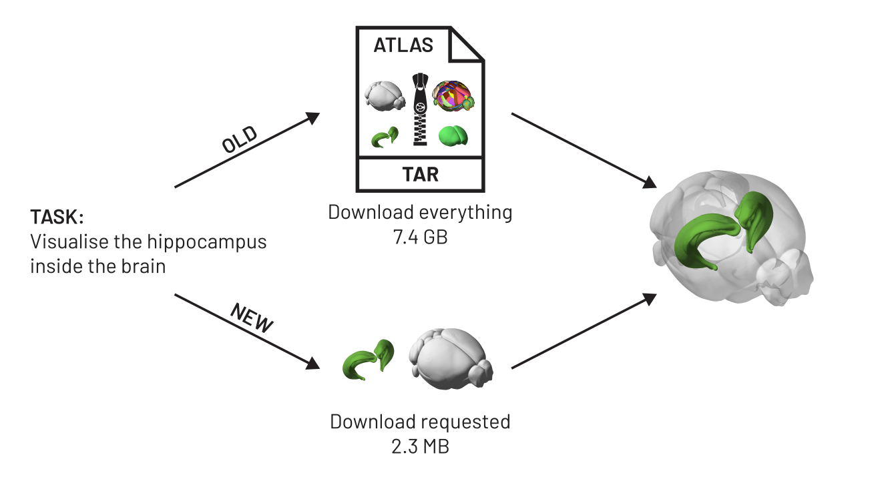

brainglobe-atlasapi V3 is here!#
We’re excited to announce the full release of brainglobe-atlasapi version 3. You can install it (or upgrade) with:
pip install -U brainglobe-atlasapi
If you followed along with the V3 pre-release post, you already know what changed under the hood. Atlases have moved from single monolithic archives on GIN to independently versioned components stored on AWS S3, with image data in the OME-Zarr format and meshes in the precomputed format.
A quick recap of the new structure#
An atlas is no longer a single bundle. It is a manifest that points at four kinds of independently versioned components: a template, an annotation set (labels, hemispheres, meshes, and pre-computed masks), a coordinate space, and a terminology. The layout follows the Atlas Asset Organization from the Allen Institute.
Components that are shared between atlases are stored once rather than duplicated per atlas. Two annotation sets associated with the same template, or the same terminology reused across related atlases, are uploaded a single time.


Figure 1. The remote and local directory structures for two atlases sharing components. The files on the remote take 2.8 GB. A local install of both atlases takes 268 KB until you ask for actual pixels or meshes.
The pre-release post has the full detail on the format itself.
What this means now#
Components are only fetched when requested#
Instantiating an atlas fetches the manifest, the terminology, and a handful of small metadata files. Templates, annotations, hemispheres, meshes and masks are each fetched from S3 the first time they are requested, and cached locally afterwards.
Download times now scale with what your analysis needs, not with the size of the atlas it happens to use. Visualising the hippocampus for every BrainGlobe atlas only fetches around 100 MB of meshes. To complete this workflow in the current version, all data would be downloaded for every atlas resulting in 500 GB of images and meshes on disk.

Figure 2. Lazy fetching of components for analysis. To draw the hippocampus inside a transparent brain, V2 pulled a 7.4 GB archive containing every image and every mesh in the atlas. V3 fetches the two meshes the render actually uses, 2.3 MB.
Uptime and download speed#
Atlases are now served from AWS S3 rather than from GIN. GIN has served BrainGlobe well for years, but it is hosted by a single research institute, and when it was slow or down every pipeline that needed a fresh atlas stalled. S3 is redundant and has much higher throughput, so that should stop happening. The chunked formats help here too: a download is now many small independent requests that can be fetched in parallel, instead of one long serial transfer.
Faster iteration across atlases#
Comparing regions across atlases used to mean waiting for each atlas to download in full before you could look at anything. Now a loop over a many atlases costs a few manifest downloads plus whichever components you touch. Comparing region hierarchies never downloads a single voxel, and comparing one region’s mesh downloads one mesh per atlas.
Faster structure mask computation#
In V2, atlas.get_structure_mask("CTX") walked the region tree, collected every descendant id, and ran np.isin over the entire annotation volume. This took seconds to minutes for a region with many children, every time, for every region. V3 ships masks as a pre-computed 4D array with one slice per region, so get_structure_mask fetches and reads a single slice. This doesn’t add a significant disk space burden as the masks are highly compressible.
Pinning an atlas version#
BrainGlobeAtlas can now take an explicit version:
from brainglobe_atlasapi import BrainGlobeAtlas
atlas = BrainGlobeAtlas("allen_mouse_25um", version="3.0")
Leave it out and you get the latest release, as before. Provide it and you get that specific BrainGlobe version of the atlas. A methods section can then name the version it used, and someone else can reproduce the analysis years later. Several versions of the same atlas can also sit side by side locally, which the old format did not allow.
Looking at an atlas without installing anything#
Because the image data are OME-Zarr and the meshes are in the precomputed format, both are directly readable by neuroglancer. Atlases on the atlas details page now carry a “View in neuroglancer” badge, for example the Allen adult mouse atlas or the Columbia cuttlefish atlas.
Being able to preview an atlas this quickly makes it much easier to decide whether it suits your data before you build an analysis pipeline around it, and to share a specific view with a collaborator or a reviewer.
Faster releases of new atlases#
Since components are versioned separately, changing one of them no longer forces a rebuild of everything else. Fixing a typo in a region name used to mean regenerating and repackaging the whole atlas, which for a high-resolution atlas is hours of compute followed by a fresh multi-gigabyte upload. Now it means republishing a terminology file and referencing it from a new atlas manifest. The same goes for adding additional metadata to an atlas or one of its components, so expect considerable progress here in the future!
Easier atlas collections#
Shared components make families of atlases much cheaper to publish. A single template with several annotation sets, or an atlas with multiple templates that share a single annotation set, is now a handful of manifest files pointing at mostly the same objects, rather than several nearly identical multi-gigabyte bundles.
What do I need to do?#
For most users, nothing. The Python API for the common paths is unchanged, and the first instantiation of an atlas will download the atlases in the new format automatically. V3 cannot read the old atlas format, so the old directories (for example ~/.brainglobe/allen_mouse_25um) are no longer used and can be deleted.
A few things did change, and are worth checking if you are using them directly:
get_structure_masknow returns a binary mask. V2 returned an array holding the structure’s id at every voxel belonging to that structure. V3 returns1where the structure or a descendant is present and0elsewhere, asuint8.atlas.referenceis deprecated in favour ofatlas.template. It still works, but prints a warning and will be removed in a future version.Mesh paths no longer end in
.obj.structure["mesh_filename"]points at a Draco-encoded precomputed mesh. Usestructure["mesh"], which decodes it for you and returns ameshio.Meshin the same orientation and units as before.BrainGlobeAtlasno longer acceptsinterm_download_dirorprint_authors.The local layout has moved to
~/.brainglobe/brainglobe-atlasapi/. If you were locating atlas files by searching~/.brainglobedirectly, please useBrainGlobeAtlasorbrainglobe_atlasapi.list_atlasesinstead.
Feedback#
If you have any feedback please contact us on Zulip or open an issue on GitHub.